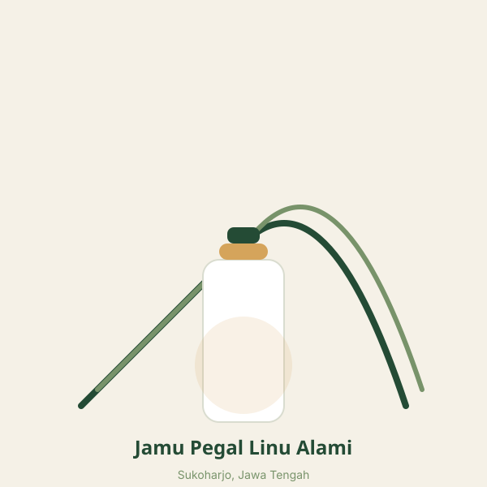
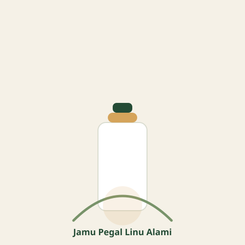

★★★★★
"Saya tertarik mencoba produk jamu lokal ini karena ingin mengenal lebih jauh produk herbal tradisional Indonesia."
Pelanggan Setia SukoharjoKenali Jamu Pegal Linu, produk herbal tradisional yang terinspirasi dari kekayaan tanaman Indonesia dan budaya jamu Sukoharjo.

Aktivitas sehari-hari dapat membuat tubuh terasa lelah dan kurang nyaman. Butuh pilihan yang alami untuk tetap segar dan produktif.
Memperkenalkan jamu tradisional berbahan herbal sebagai bagian dari pilihan gaya hidup sehat. Terinspirasi dari budaya jamu Sukoharjo.
Produk herbal tradisional dari Sukoharjo, Jawa Tengah, untuk kesehatan tubuh Anda.

| Nama Produk | Jamu Pegal Linu Alami |
|---|---|
| Kategori | Minuman herbal tradisional |
| Asal Produk | Sukoharjo, Jawa Tengah |
| Komposisi | Sesuai label produk |
| Kemasan | Sesuai produk sebenarnya |
| Isi Bersih | Sesuai kemasan |
Nilai lebih yang kami tawarkan bagi konsumen setia.
Informasi bahan berdasarkan komposisi produk yang terpilih dari tanaman herbal alami.
Terinspirasi dari budaya jamu Indonesia yang telah diwariskan turun-temurun.
Komposisi dan aturan penggunaan tersedia secara transparan untuk konsumen.
Mengangkat potensi produk unggulan daerah Sukoharjo untuk mendukung UMKM lokal.
Ulasan dari pelanggan yang telah mencoba Jamu Pegal Linu Alami.
"Saya tertarik mencoba produk jamu lokal ini karena ingin mengenal lebih jauh produk herbal tradisional Indonesia."
Pelanggan Setia Sukoharjo"Produk herbal berkualitas dengan kemasan yang rapi. Cocok untuk gaya hidup sehat setiap hari."
Pengguna Jamu LokalTestimoni di atas adalah contoh format. Testimoni yang ditampilkan pada website harus berasal dari pelanggan nyata dan digunakan dengan izin.
Pilihan pembelian yang sesuai dengan kebutuhan Anda.
Harga di atas adalah placeholder. Ganti dengan harga sebenarnya sebelum publish. Biaya pengiriman dan metode pemesanan akan dikonfirmasi melalui WhatsApp bisnis.
Kenali produk tradisional Indonesia dan dukung perkembangan UMKM lokal.
Hubungi Sekarang